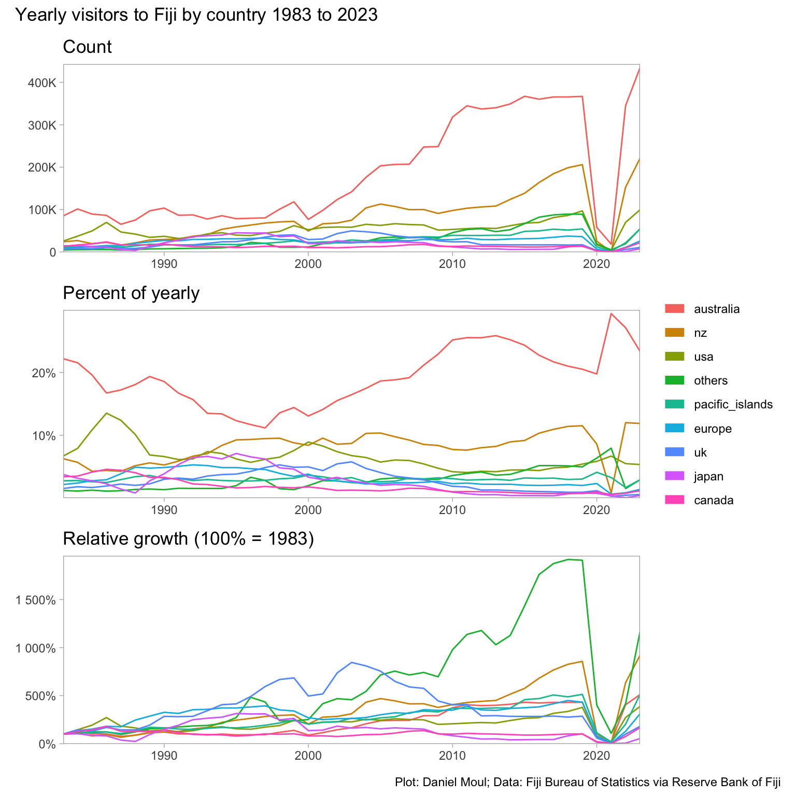
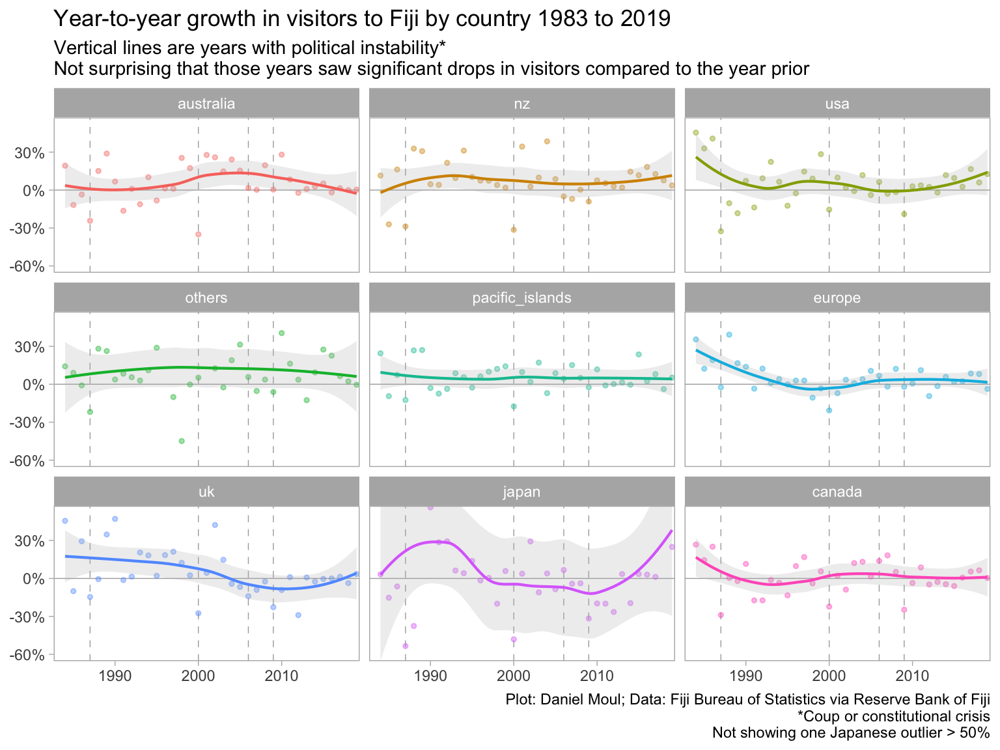

6Overseas arrivals, tourism revenue, and hotel nights
Among the PICTs, tourism is a significant source of foreign currency and local employment. The COVID-19 pandemic shut down most overseas travel, and as of 2022 annual numbers did not returned to pre-pandemic trends. Overseas visitors include sea and air arrivals. It includes excursionists/same-day-visitors i.e. visitors from cruise ships.
Fiji is second, behind only Guam in number of overseas arrivals. Are U.S. active military personnel included in Guam’s numbers? If so then Fiji would be first in yearly non-military visitors: mainly people traveling for holiday, work, or visiting friends and family.
6.1 Overseas visitors
Show the code
source(here::here("scripts/load-libraries.R"))theme_set(theme_light() +theme(panel.grid.major =element_blank(),panel.grid.minor =element_blank()))options(scipen =5)my_caption <-"Plot: Daniel Moul; Data: South Pacific Community"my_caption_fbos <-"Plot: Daniel Moul; Data: Fiji Bureau of Statistics via Reserve Bank of Fiji"
There are many ways one could compare the overseas visitors numbers among PICTs. I offer four below.
Show the code
p0 <- visitors_total |>mutate(place =fct_reorder(pacific_island_countries_and_territories, -obs_value, sum)) |>ggplot() +geom_line(aes(time_period, obs_value +1, color =if_else(place =="Fiji","purple", "black"),linewidth =if_else(place =="Fiji",1, 0),group = place),alpha =0.5 ) +geom_smooth(aes(time_period, obs_value +1),method ="loess", formula ='y ~ x',span =0.2, se =FALSE) +scale_color_identity() +scale_linewidth_continuous(range =c(0.25, 1.0)) +scale_y_continuous(expand =expansion(mult =c(0.01, 0.05)),labels =label_number(big.mark =",")) +guides(linewidth ="none") +labs(subtitle ="A: Count",x =NULL,y =NULL )p1 <- visitors_total |>mutate(place =fct_reorder(pacific_island_countries_and_territories, -obs_value, sum)) |>ggplot() +geom_line(aes(time_period, obs_value +1, color =if_else(place =="Fiji","purple", "black"),linewidth =if_else(place =="Fiji",1, 0),group = place),alpha =0.5 ) +geom_smooth(aes(time_period, obs_value +1),method ="loess", formula ='y ~ x',span =0.2, se =FALSE) +scale_color_identity() +scale_linewidth_continuous(range =c(0.25, 1.0)) +scale_y_log10(expand =expansion(mult =c(0.01, 0.05)),labels =label_number(big.mark =",")) +guides(linewidth ="none") +labs(subtitle ="B: Count (log10 scale)",x =NULL,y =NULL )p2 <- visitors_total |>mutate(place =fct_reorder(pacific_island_countries_and_territories, -obs_value, sum)) |>ggplot() +geom_line(aes(time_period, pct_of_first_year, color =if_else(place =="Fiji","purple", "black"),linewidth =if_else(place =="Fiji",1, 0),group = place),alpha =0.5 ) +geom_smooth(aes(time_period, pct_of_first_year),method ="loess", formula ='y ~ x',span =0.2, se =FALSE) +scale_color_identity() +scale_linewidth_continuous(range =c(0.25, 1.0)) +scale_y_continuous(expand =expansion(mult =c(0.01, 0.05)),labels =label_number(big.mark =",")) +guides(linewidth ="none") +labs(subtitle ="C: Trends normalized (1.0 = value for each place at first year in data set)",x =NULL,y =NULL )p3 <- visitors_total |>mutate(place =fct_reorder(pacific_island_countries_and_territories, -obs_value, sum)) |>ggplot() +geom_line(aes(time_period, pct_of_max, color =if_else(place =="Fiji","purple", "black"),linewidth =if_else(place =="Fiji",1, 0),group = place),alpha =0.5 ) +geom_smooth(aes(time_period, pct_of_max),method ="loess", formula ='y ~ x',span =0.2, se =FALSE) +scale_color_identity() +scale_linewidth_continuous(range =c(0.25, 1.0)) +scale_y_continuous(expand =expansion(mult =c(0.01, 0.05)),labels =label_number(big.mark =",")) +guides(linewidth ="none") +labs(subtitle ="D: Trends normalized (1.0 = max for each place)",x =NULL,y =NULL )p0 + p1 + p2 + p3 +plot_annotation(title ="Annual overseas visitor trends: four views",subtitle ="Fiji = purple. 2000-2022",caption = my_caption )
Figure 6.2: Annual overseas visitor trends: four views
6.2 Visitors by country
Show the code
dta_for_plot <- visitors_by_country_long |>filter(country !="total")year_min <-min(dta_for_plot$period)year_max <-max(dta_for_plot$period)p1 <- dta_for_plot |>ggplot() +geom_line(aes(x = period, y = visitors, color = country),show.legend =FALSE) +scale_x_continuous(expand =expansion(mult =c(0, 0))) +scale_y_continuous(expand =expansion(mult =c(0.002, 0.02)),labels =label_number(scale_cut =cut_short_scale())) +labs(title =glue("Count"),x =NULL,y =NULL )p2 <- dta_for_plot |>ggplot() +geom_line(aes(x = period, y = pct_of_yearly, color = country),show.legend =FALSE) +scale_x_continuous(expand =expansion(mult =c(0, 0))) +scale_y_continuous(expand =expansion(mult =c(0.002, 0.02)),labels =label_percent()) +guides(color =guide_legend(override.aes =list(linewidth =3))) +labs(title =glue("Percent of yearly"),x =NULL,y =NULL,color =NULL )p3 <- dta_for_plot |>ggplot() +geom_line(aes(x = period, y = visitors_normalized, color = country),show.legend =TRUE) +scale_x_continuous(expand =expansion(mult =c(0, 0))) +scale_y_continuous(expand =expansion(mult =c(0.002, 0.02)),labels =label_percent()) +guides(color =guide_legend(override.aes =list(linewidth =3))) +labs(title =glue("Relative growth (100% = 1983)"),x =NULL,y =NULL,color =NULL )p1 / p2 / p3 +plot_annotation(title =glue("Yearly visitors to Fiji by country {year_min} to {year_max}"),# subtitle = "Vertical lines are years with coups or constitutional crises",caption = my_caption_fbos ) +plot_layout(guides ="collect")

Figure 6.3: Annual overseas visitor by country
Show the code
dta_for_plot <- visitors_by_country_long |>filter(country !="total", period <2020)year_min <-min(dta_for_plot$period)year_max <-max(dta_for_plot$period)dta_for_plot |>ggplot(aes(x = period, y = yty_growth, color = country)) +geom_vline(xintercept = coup_years$period, lty =2, linewidth =0.25, alpha =0.4) +geom_hline(yintercept =0, linewidth =0.25, alpha =0.4) +geom_point(size =1.0, alpha =0.4,na.rm =TRUE) +geom_smooth(method ='loess', formula ='y ~ x', se =TRUE,linewidth =0.75,fill ="grey", alpha =0.25,na.rm =TRUE) +scale_x_continuous(expand =expansion(mult =c(0.01, 0.01))) +scale_y_continuous(expand =expansion(mult =c(0.002, 0.02)),labels =label_percent()) +guides(color ="none") +coord_cartesian(ylim =c(NA, 0.55)) +facet_wrap(~country) +labs(title =glue("Year-to-year growth in visitors to Fiji by country {year_min} to {year_max}"),subtitle =glue("Vertical lines are years with political instability*","\nNot surprising that those years saw significant drops in visitors", " compared to the year prior"),x =NULL,y =NULL,color =NULL,caption =glue(my_caption_fbos,"\n*Coup or constitutional crisis","\nNot showing one Japanese outlier > 50%") )

Figure 6.4: Year-to-year growth rate in overseas visitors by country